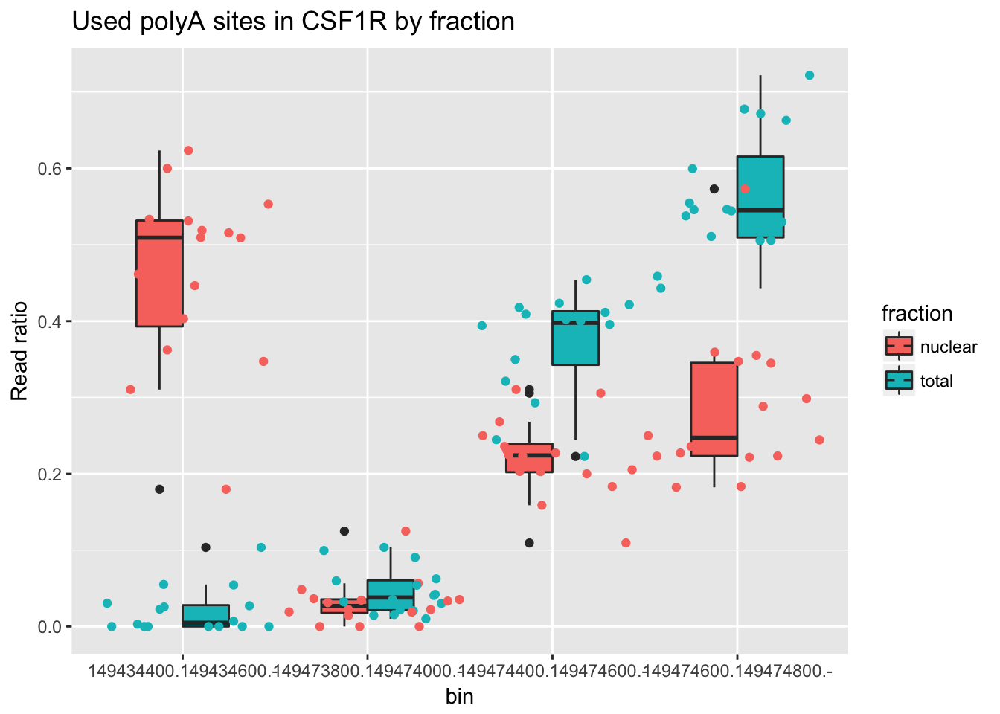

Differential isoform usage netween total and nuclear fractions
Briana Mittleman
6/5/2018
Last updated: 2018-06-06
workflowr checks: (Click a bullet for more information)-
✔ R Markdown file: up-to-date
Great! Since the R Markdown file has been committed to the Git repository, you know the exact version of the code that produced these results.
-
✔ Environment: empty
Great job! The global environment was empty. Objects defined in the global environment can affect the analysis in your R Markdown file in unknown ways. For reproduciblity it’s best to always run the code in an empty environment.
-
✔ Seed:
set.seed(12345)The command
set.seed(12345)was run prior to running the code in the R Markdown file. Setting a seed ensures that any results that rely on randomness, e.g. subsampling or permutations, are reproducible. -
✔ Session information: recorded
Great job! Recording the operating system, R version, and package versions is critical for reproducibility.
-
Great! You are using Git for version control. Tracking code development and connecting the code version to the results is critical for reproducibility. The version displayed above was the version of the Git repository at the time these results were generated.✔ Repository version: 01aa120
Note that you need to be careful to ensure that all relevant files for the analysis have been committed to Git prior to generating the results (you can usewflow_publishorwflow_git_commit). workflowr only checks the R Markdown file, but you know if there are other scripts or data files that it depends on. Below is the status of the Git repository when the results were generated:
Note that any generated files, e.g. HTML, png, CSS, etc., are not included in this status report because it is ok for generated content to have uncommitted changes.Ignored files: Ignored: .Rhistory Ignored: .Rproj.user/ Untracked files: Untracked: data/gene_cov/ Untracked: data/leafcutter/ Untracked: data/reads_mapped_three_prime_seq.csv Untracked: data/ssFC200.cov.bed Untracked: output/plots/ Unstaged changes: Modified: code/Snakefile
Expand here to see past versions:
| File | Version | Author | Date | Message |
|---|---|---|---|---|
| Rmd | 01aa120 | Briana Mittleman | 2018-06-06 | change plots to ratio of reads in gene |
| html | 3ab25ef | Briana Mittleman | 2018-06-06 | Build site. |
| Rmd | 1c91f2b | Briana Mittleman | 2018-06-06 | plotting diff isoform hits |
| html | 86cfd9f | Briana Mittleman | 2018-06-06 | Build site. |
| Rmd | a19683c | Briana Mittleman | 2018-06-06 | start dif isoform analysis |
In this analysis I will use the file I created in the previous analysis along with the leafcutter software to run a differential isoform usage analysis between my total and nucelar fractions.
library(workflowr)Loading required package: rmarkdownThis is workflowr version 1.0.1
Run ?workflowr for help getting startedlibrary(ggplot2)
library(tidyr)
library(dplyr)Warning: package 'dplyr' was built under R version 3.4.4
Attaching package: 'dplyr'The following objects are masked from 'package:stats':
filter, lagThe following objects are masked from 'package:base':
intersect, setdiff, setequal, unionlibrary(edgeR)Warning: package 'edgeR' was built under R version 3.4.3Loading required package: limmaWarning: package 'limma' was built under R version 3.4.3library(reshape2)Warning: package 'reshape2' was built under R version 3.4.3
Attaching package: 'reshape2'The following object is masked from 'package:tidyr':
smithsFinal data preparation:
Create the differential sample file. It will have the names of the samples in column 1 and the fraction they belong to in column two.
isoform_data=read.table("../data/leafcutter/all_leaf_200wind.csv")
samples=colnames(isoform_data)
fraction=c()
for (i in samples){
if(grepl("N", i)){
fraction=c(fraction, "Nuclear")
}
else{
fraction=c(fraction, "Total")
}
}
sample_anno=cbind(samples,fraction)I will write this to the leafcutter directory without the header.
#write.table(sample_anno, file="../data/leafcutter/sample_ano.txt", row.names = FALSE, quote = FALSE, sep=" ", col.names = F)Leafcutter results
Confirm we only have 2188 genes with APA here.
genes.anno=data.frame(x=rownames(isoform_data)) %>% separate(col=x, into=c("chr","bin","gene"), sep=":")
n_genes= n_distinct(genes.anno$gene)
num_gene=genes.anno %>% group_by(gene) %>% select(gene) %>% tally() %>% filter(n>1)Warning: package 'bindrcpp' was built under R version 3.4.4dim(num_gene)[1] 2188 2We have 3797 unique genes in this file and only 2188 have multiple bins passing the filter.
I ran leafcutter on the cluster with the following command.
Rscript /project2/gilad/briana/leafcutter/scripts/leafcutter_ds.R all_apa_perind.csv.gz sample_ano.txt -o APAThe resutls for significant bins are in the effet size file.
effect_size=read.table("../data/leafcutter/APA_effect_sizes.txt", header=T)
effect_size= effect_size %>% separate(col=intron, into=c("chr","start","end", "gene"), sep=":")
effect_size= effect_size %>% separate(col=gene, into=c("clu", "gene", "strand"), sep="_")counts=read.table("../data/leafcutter/all_leaf_200wind.csv")
genes=rownames(counts)
counts_anno=cbind(genes,counts) I need a way to plot the counts for the bins called as significant in leafcutter. To do this I should tidy the counts data and have line and sample coulmns. Then I can create boxplots.
counts_melt =melt(counts_anno, id.vars="genes") %>% mutate(fraction=ifelse(grepl("T", variable), "total", "nuclear")) %>% mutate(line=substr(variable,3,7)) %>% separate(col=genes, into=c("chr","bin", "gene"), sep=":")I can filter this for specific genes and examples. I am going to first look at the gene with the top effect size. ENSG00000066135.8
counts_melt_ENSG00000066135.8= counts_melt %>% filter(gene=="ENSG00000066135.8") %>% arrange(bin) Try to plot this.
ggplot(counts_melt_ENSG00000066135.8, aes(x=bin, y=value, fill=fraction)) + geom_boxplot() + labs(title="Used polyA sites in KDM4A by fraction", y="Read Counts")Expand here to see past versions of unnamed-chunk-10-1.png:
| Version | Author | Date |
|---|---|---|
| 86cfd9f | Briana Mittleman | 2018-06-06 |
Look at one more gene. ENSG00000182578.9
counts_melt_ENSG00000182578.9= counts_melt %>% filter(gene=="ENSG00000182578.9") %>% arrange(bin)
ggplot(counts_melt_ENSG00000182578.9, aes(x=bin, y=value, fill=fraction)) + geom_boxplot() + geom_jitter( aes(col=fraction)) +labs(title="Used polyA sites in ENSG00000182578.9 by fraction", y="Read Counts") 
Expand here to see past versions of unnamed-chunk-11-1.png:
| Version | Author | Date |
|---|---|---|
| 3ab25ef | Briana Mittleman | 2018-06-06 |
| 86cfd9f | Briana Mittleman | 2018-06-06 |
One more. ENSG00000163632.8
counts_melt_ENSG00000163632.8= counts_melt %>% filter(gene=="ENSG00000163632.8") %>% arrange(bin)
ggplot(counts_melt_ENSG00000163632.8, aes(x=bin, y=value, fill=fraction)) + geom_boxplot() + labs(title="Used polyA sites in ENSG00000163632.8 by fraction", y="Read Counts")Expand here to see past versions of unnamed-chunk-12-1.png:
| Version | Author | Date |
|---|---|---|
| 3ab25ef | Briana Mittleman | 2018-06-06 |
I want to change the y axis to a ratio of reads in the bin/reads in all bins for that individual. To do this I will group by ind and fraction then get a sum for the gene. this will allow me to make the ratio.
Try this on the most recent example.
counts_melt_ENSG00000163632.8_r= counts_melt_ENSG00000163632.8 %>% group_by(variable) %>% mutate(sum=sum(value)) %>% ungroup(variable) %>% mutate(ratio=value/sum)Plot this instead.
ggplot(counts_melt_ENSG00000163632.8_r, aes(x=bin, y=ratio, fill=fraction)) + geom_boxplot() + labs(title="Used polyA sites in ENSG00000163632.8 by fraction", y="Count ratio")Do this for the counts_melt_ENSG00000182578.9
counts_melt_ENSG00000182578.9.r= counts_melt_ENSG00000182578.9 %>% group_by(variable) %>% mutate(sum=sum(value)) %>% ungroup(variable) %>% mutate(ratio=value/sum)
ggplot(counts_melt_ENSG00000182578.9.r, aes(x=bin, y=ratio, fill=fraction)) + geom_boxplot() + labs(title="Used polyA sites in ENSG00000182578.9 by fraction", y="Count ratio") + geom_jitter( aes(col=fraction))
Session information
sessionInfo()R version 3.4.2 (2017-09-28)
Platform: x86_64-apple-darwin15.6.0 (64-bit)
Running under: macOS Sierra 10.12.6
Matrix products: default
BLAS: /Library/Frameworks/R.framework/Versions/3.4/Resources/lib/libRblas.0.dylib
LAPACK: /Library/Frameworks/R.framework/Versions/3.4/Resources/lib/libRlapack.dylib
locale:
[1] en_US.UTF-8/en_US.UTF-8/en_US.UTF-8/C/en_US.UTF-8/en_US.UTF-8
attached base packages:
[1] stats graphics grDevices utils datasets methods base
other attached packages:
[1] bindrcpp_0.2.2 reshape2_1.4.3 edgeR_3.20.9 limma_3.34.9
[5] dplyr_0.7.5 tidyr_0.7.2 ggplot2_2.2.1 workflowr_1.0.1
[9] rmarkdown_1.8.5
loaded via a namespace (and not attached):
[1] Rcpp_0.12.17 compiler_3.4.2 pillar_1.1.0
[4] git2r_0.21.0 plyr_1.8.4 bindr_0.1.1
[7] R.methodsS3_1.7.1 R.utils_2.6.0 tools_3.4.2
[10] digest_0.6.15 lattice_0.20-35 evaluate_0.10.1
[13] tibble_1.4.2 gtable_0.2.0 pkgconfig_2.0.1
[16] rlang_0.2.1 yaml_2.1.19 stringr_1.3.1
[19] knitr_1.18 locfit_1.5-9.1 rprojroot_1.3-2
[22] grid_3.4.2 tidyselect_0.2.4 glue_1.2.0
[25] R6_2.2.2 purrr_0.2.5 magrittr_1.5
[28] whisker_0.3-2 backports_1.1.2 scales_0.5.0
[31] htmltools_0.3.6 assertthat_0.2.0 colorspace_1.3-2
[34] labeling_0.3 stringi_1.2.2 lazyeval_0.2.1
[37] munsell_0.4.3 R.oo_1.22.0
This reproducible R Markdown analysis was created with workflowr 1.0.1